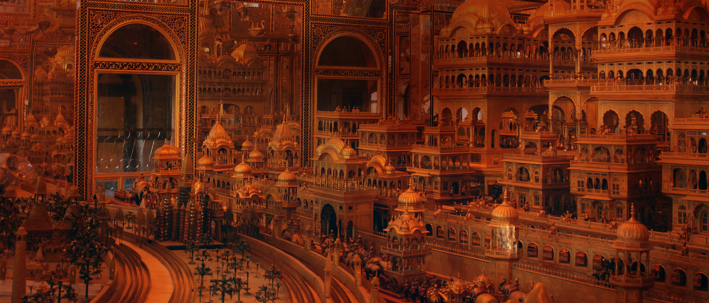

destination

Ajmer
The city of Ajmer gets its name from ‘Ajay Meru’. Roughly translated, it means ‘invincible hills’. Nestled in the Aravallis south west of Jaipur, Ajmer was founded by Raja Ajaypal Chauhan in the 7th century AD. Till the late 12th century AD, Ajmer was the epicentre of the Chauhan dynasty. After Prithviraj Chauhan’s loss to Mohammed Ghori in 1193 AD, Ajmer became home to several dynasties. The Mughals in particular, fancied it as their favourite destination due to the presence of the holy Ajmer Sharif Dargah.
One of the early meetings between the Mughal King Jahangir and the Ambassador of the Court of Queen Elizabeth, Sir Thomas Roe, took place here in 1616. A few centuries later, the city was handed over to the British, making Ajmer the only region in Rajputana to be directly controlled by the East India Company. Ajmer is now regarded as an educational and cultural centre.
Ajmer is home to the famous Dargah Sharif, which houses the Tomb of Garib Nawaz, also known as Moinuddin Chisti, the founder of the Chisti order of Sufism. Ajmer is also known for Mayo College, one of the country’s first schools that was a stepping stone for British style of education. It is also a sacred city for Hindus and Muslims alike and is renowned for being a centre of history and culture and beauty.
ATTRACTIONS & PLACES TO VISIT AND EXPLORE IN AJMER